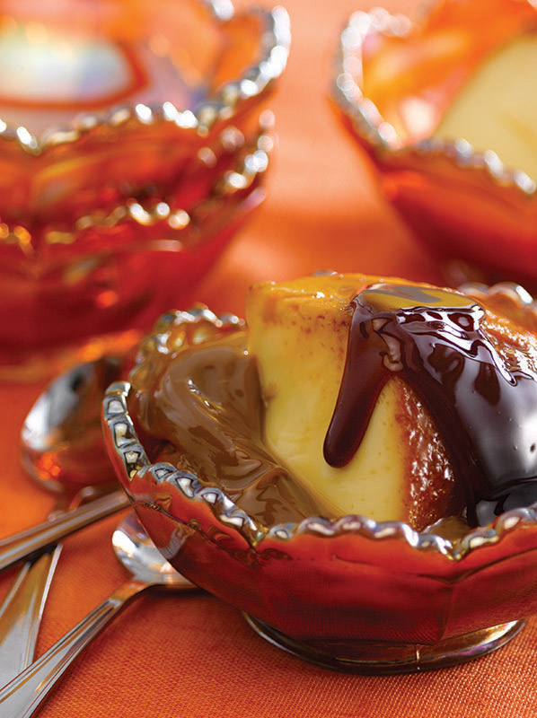

Flan casero
Ingredientes:
- 1 litro de Leche
- 6 Huevos
- 200 g de Azúcar
- 1 cucharadita de esencia de vainilla
Para el caramelo:
- 150 g de Azúcar
- 4 cucharadas de Agua
Preparación
- Prepara el caramelo: En un cazo a fuego medio, coloca el azúcar y el agua. Deja que se disuelva el azúcar sin remover demasiado. Cocina hasta que se forme un caramelo dorado, moviendo suavemente la sartén para distribuirlo de manera uniforme. Una vez que tenga un color dorado oscuro, retira del fuego y viértelo rápidamente en el molde donde vas a hacer el flan. Extiende el caramelo por el fondo y las paredes del molde, procurando que quede bien cubierto. Deja que se enfríe y endurezca.
- Precalienta el horno a 180°C (350°F).
- En un recipiente aparte, bate los huevos y el azúcar hasta obtener una mezcla homogénea. Agrega la esencia de vainilla y mezcla nuevamente.
- En una olla, calienta la leche a fuego medio hasta que esté caliente pero no hirviendo. Retira del fuego.
- Vierte la leche caliente sobre la mezcla de huevos y azúcar poco a poco, revolviendo constantemente para evitar que los huevos se cuajen. La idea es ir templando la mezcla.
- Una vez que hayas incorporado toda la leche a la mezcla de huevos, azúcar y vainilla, pasa la preparación por un colador fino para eliminar posibles grumos.
- Vierte la mezcla en el molde caramelizado que preparaste previamente.
- Coloca el molde dentro de una fuente de horno más grande y llena la fuente con agua caliente hasta alcanzar aproximadamente la mitad de la altura del molde del flan. Esto creará un baño de María, que ayudará a que el flan se cocine de manera suave y uniforme.
- Lleva al horno precalentado y hornea durante aproximadamente 50-60 minutos, o hasta que al insertar un palillo en el centro del flan, este salga limpio.
- Retira el molde del horno y del baño de María, y deja que se enfríe a temperatura ambiente.
- Una vez que el flan esté completamente frío, colócalo en el refrigerador durante al menos 4 horas, pero preferiblemente durante toda la noche, para que tome consistencia.
- Para desmoldar el flan, pasa un cuchillo por los bordes interiores del molde para separar el flan del recipiente. Luego, coloca un plato de servir boca abajo sobre el molde y gíralo con cuidado. El flan debería desprenderse y caer suavemente sobre el plato con el caramelo líquido.